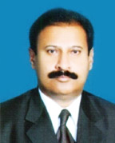

National Fertilizer Corporation of Pakistan is one of the largest employers of qualified engineers particularly in the field of Chemical Engineering. In order to meet the requirement of trained manpower for chemical process industry especially in the fertilizer sector, a Training Center was established in 1985 with the technical assistance of M/s. COSMO International Co., Ltd., Japan. The Center trained managers, engineers, supervisors, operators/ technicians through multi-dimensional programs that vary widely in content and duration for all types of process and engineering industry.
To further diversify the activities of the Centre and in line with the education policy announced by the Government of Pakistan, NFC with the approval of Ministry of Industries & Production, Government of Pakistan upgraded the Centre in 1994 and started graduate engineering classes initially in Chemical Engineering discipline and changed its nomenclature as “NFC Institute of Engineering & Technological training”. This was also the need of the country and particularly of this area.
Read More
National Fertilizer Corporation of Pakistan is one of the largest employers of qualified engineers particularly in the field of Chemical Engineering. In order to meet the requirement of trained manpower for chemical process industry especially in the fertilizer sector, a Training Center was established in 1985 with the technical assistance of M/s. COSMO International Co., Ltd., Japan. The Center trained managers, engineers, supervisors, operators/ technicians through multi-dimensional programs that vary widely in content and duration for all types of process and engineering industry.
To further diversify the activities of the Centre and in line with the education policy announced by the Government of Pakistan, NFC with the approval of Ministry of Industries & Production, Government of Pakistan upgraded the Centre in 1994 and started graduate engineering classes initially in Chemical Engineering discipline and changed its nomenclature as “NFC Institute of Engineering & Technological training”. This was also the need of the country and particularly of this area.
Read More
It is a matter of great satisfaction and pride to state that NFC Institute of Engineering & Technology, Multan is going to begin a new academic session , 2013, thereby hitting a new milestone on its journey in the search for excellence. On this auspicious occasion, I extend my very warm welcome to the young men and women who are likely to enter this great institute to realize their dreams and aspirations. Read More
Being honored as the first Vice Chancellor of NFC Institute of Engineering & Technology (NFC-IET) Multan, I am exceedingly delighted to write this message to all of the aspirants intended to get admission for the session 2013 here at this institute. It has come a long way since the inception of IET in 1994; the institute has been endeavouring very hard to uphold high academic principles in offering dedicated engineering programs. Crediting to its enviable reputation, the institute was exalted to the level of a Federally Chartered Degree Awarding institute last year. Since then, the institute is making headway through continuous enhancement of its infrastructure and engaging smart faculty. Read More